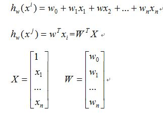
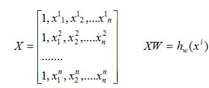
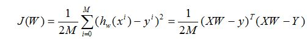
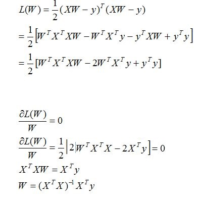
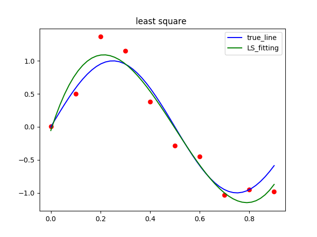
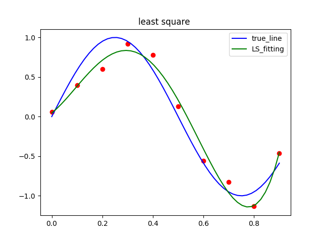
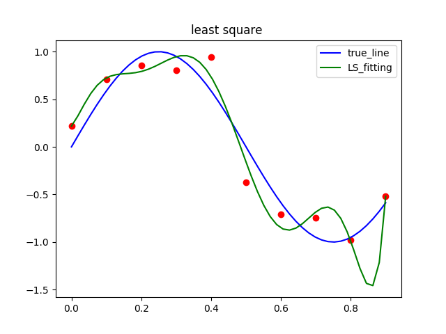
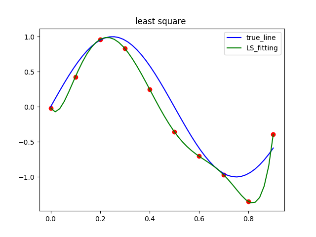

1. 线性回归模型
通常变量之间存在着某种关系，可以使用线性方程来描述这种关系。
1.1 函数模型

对于多样本数据，可写成矩阵形式：

1.2 损失函数
需要根据样本数据，来找到一条曲线拟合这些数据，因此需要一个标准来刻画曲线与实际值的距离。
损失函数（loss function） ：刻画拟合曲线与目标label 距离的函数。使用残差平方和作为loss function

因此，现在目标就变成了求出使损失函数最小的线性方程的系数矩阵 W。
2. 优化方法评价
本博文以多项式拟合一个正弦函数为例，以如下的方式生成10个符合正弦函数分布的点
X = np.arange(0,1,0.05)
Y = [np.sin(2 * np.pi * x) for x in X]
# 添加高斯分布的噪声
YNoise = [np.random.normal(0,0.2 )+ y for y in Y]
Y = np.matrix(YNoise)
3.1 最小二乘法
3.1.1 解析解推导
当样本矩阵满秩可求解时，可以直接求出解析解，求得最优解。
解析解推导：

3.1.2 拟合结果
使用解析解的方式进行拟合。用4阶和5阶多项式拟合结果如下：


3.2 梯度下降法
当样本矩阵不是满秩矩阵时，可以采用迭代的方法求解优化解。梯度下降法是一种求解局部最优的方法。对于函数$F(x)$ ，在$x_1$ 点的梯度时$F(x)$ 增长最快的方向，相反方向，就是该点下降最快的方向。沿着最快下降方向，可以增加优化解的求解速度。
3.2.1 求解思路
- 首先对 $\theta$ 赋值，这个值可以是随机的，也可以是一个全零的向量。
- 改变 $\theta$ 的值，使得 $J(\theta)$ 按梯度下降的方向进行减少。
我们可以通过对 $J(\theta)$ 求偏导，得到 $\theta$ 的更新方程：
$\theta = \theta - \alpha(X^{T}(X\theta - Y))$
一直迭代，直到收敛。
3.2.2 代码实现
# 梯度下降法
def batchGradientDescent(x,y,theta,alpha,maxIterations):
"""
:param alpha 迭代步长
:param maxIterations 最大迭代次数
:return theta 参数矩阵
"""
xt = x.transpose()
for i in range(maxIterations):
hypothesis = np.dot(x,theta)
loss = hypothesis - y
gradient = np.dot(xts,loss)
theta = theta - alpha * gradient
return theta
# 梯度下降法，增加惩罚项
def RegularzedGradientDescent(x,y,theta,alpha,maxIterations,lamb):
xt = x.transpose()
for i in range(maxIterations):
hypothesis = np.dot(x,theta)
loss = hypothesis - y
gradient = np.dot(xt,loss)
theta = theta * (1 - alpha * lamb) - alpha * gradient
return theta
4. 过拟合分析


以最小二乘法拟合多项式为例，图一是以9阶多项式拟合的，图二是以10阶多项式拟合的，可以看到对于样本点似乎都拟合的非常好，10阶多项式更是经过了每个样本点，拟合出了一条扭曲的曲线，不停上下波动。这样是很好的拟合吗，当然不是。过拟合能很好的拟合样本点，几乎拟合所有的训练数据。但却导致它失去了泛化能力，在运用到新样本上后，预测的结果差强人意。
4.2 克服过拟合
4.2.1 增加样本数据量
下图为将样本数据增加到40个点以后，用10阶多项式进行拟合的效果。过拟合效果明显减弱。
有时候不是因为算法好赢了，而是因为拥有更多的数据才赢了。但是，增加样本却不是处处适用的方法，有时候没有那么多数据，就没办法再增加样本。增加样本，也会加大计算量。
4.2.2 增加惩罚项
增加惩罚项的方法通常非常有效，当有很多特征变量时，每个变量都会起作用。增加惩罚项，通常是在代价函数后面加上一个2-范数项（也可能是1-范数）。增加了惩罚项，会对每个参数都会进行收缩（shrink)）。这将会使得参数的值尽可能小，参数越小，通常对应于越光滑的函数，也就是更加简单的函数。就会有效避免发生过拟合。
下图为使用共轭梯度法用10阶多项式拟合的结果，比较了加惩罚项和不加惩罚项两种拟合效果：
增加惩罚项时，惩罚项系数的选择是特别关键的。惩罚系数过大，会导致参数趋于零，类似于拟合了一条直线，也就是欠拟合现象。所以，惩罚系数需要在两者之间平衡，来避免过拟合，同时避免欠拟合。
Reference
- Christopher M. Bishop etc., Pattern Recognition and Machine Learning, Springer, 2006
- 周志华, 机器学习
在博主学习过程中，参考了许多他人作品，并整理到笔记，后根据笔记作此篇文章，如文中有引用他人作品部分，还请指出，以添加说明。
请多多指教！